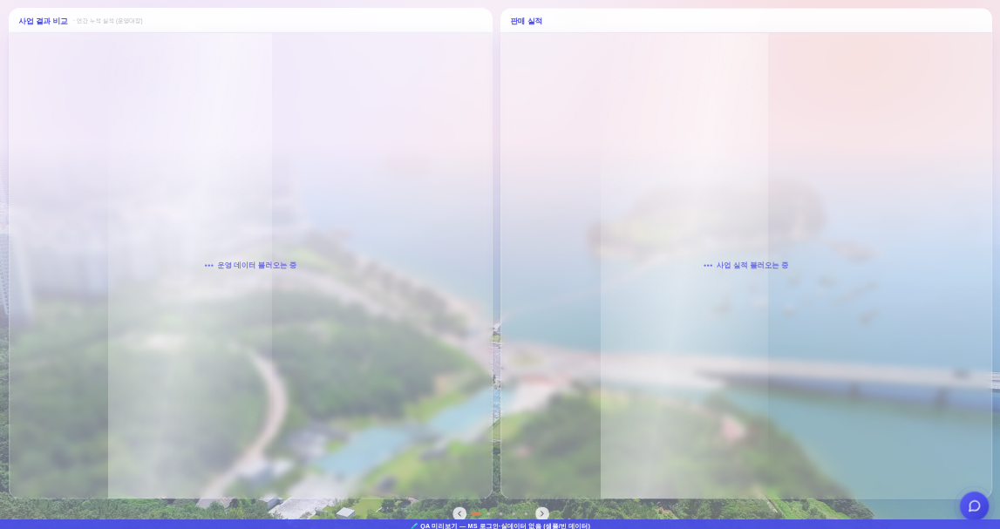
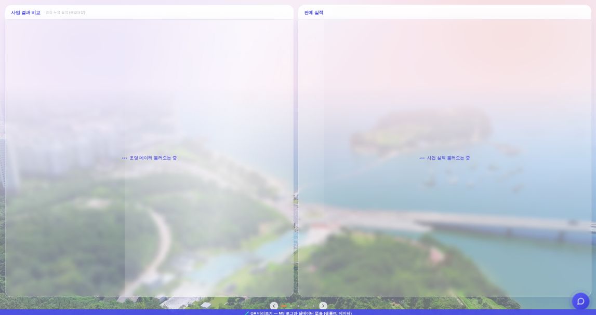

운영자 지시 260806-14 「양면이 로딩중일 때는 모든 양면을 기준해서 빗살이 쓸어가게」 ·
앞 단계(260806-12 = 빗살을 카드 한 장 전면으로) 위에 얹는 후속 · 화면 = ?qa=admin 목데이터 · 1920×1080 ·
좌 = 3면 「사업 결과 비교」(운영 데이터 미도착) · 우 = 「판매 실적」(판매중 목록 미도착) · 스윕 위상 translateX(60%) 고정 컷.


네 칸(좌·우 카드 × 머리줄·유리박스)은 각자 backdrop-filter라 서로의 영역을 넘지 못한다(260806-12와 같은 제약).
그래서 같은 띠를 네 칸에 심고, 각 칸은 그 띠의 자기 구간만 보여주는 창이 된다.
| 변수 | 값(1920×1080 실측) | 뜻 |
|---|---|---|
--sw-w | 638.5px | 띠 폭 = 펼침 폭(1878) × 34% — 정본 비율은 그대로, 기준만 펼침으로 |
--sw-x | 좌 0px · 우 −940px | 자기 칸 왼끝을 펼침 원점으로 미는 값 = −(칸 왼끝 − 펼침 왼끝) |
--sw-dur | 3s | 1.5s × 펼침/카드(1878/938) = 초당 이동 픽셀 동일 — 범위만 넓어지고 템포는 안 변한다 |
실측 = 네 칸이 그리는 띠의 전역 시작 x가 하나로 모이는가:
| 좌 머리줄 | 좌 유리박스 | 우 머리줄 | 우 유리박스 | 서로 다른 값 | |
|---|---|---|---|---|---|
| 전 | 21 | 21 | 961 | 961 | 2가지 |
| 후 | 21 | 21 | 21 | 21 | 1가지 |
.sk-rst 한 프레임으로 전원 재장전. 재장전 후 실측 = 네 칸 currentTime 450 / 450 / 450 / 450ms · 띠 왼끝 전역 x −595 전건 동일._srailAlignTop)마다 띠가 튄다 → 참여 칸 집합이 바뀔 때만 재장전한다.위 = 전(카드 기준 · 띠 둘) · 아래 = 후(펼침 기준 · 띠 하나). 실제 CSS 계승본(34% · ease-in-out · 100deg).
전 — 카드마다 자기 띠
후 — 펼침 하나를 가로지르는 띠 하나
translateX(60%)에서 정지시킨 한 컷 — 실제로는 계속 지나간다(§3이 그 모션).--sw-*는 실앱 _ldSweepSpan과 같은 식으로 이 페이지에서 실측해 넣는다(아래 스크립트 · 리사이즈 추종) · 다만 배경은 사진 대신 근사 그라데이션(자기완결 1파일 = 외부 자산 0).docs/reports/260806-12_로딩스윕_창전면_전후.html.